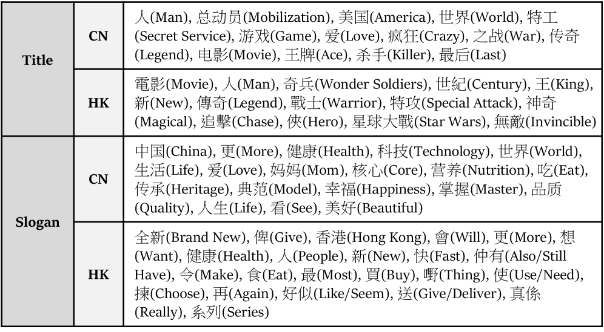
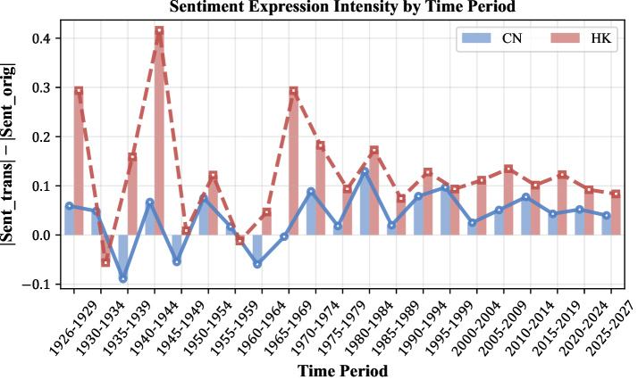
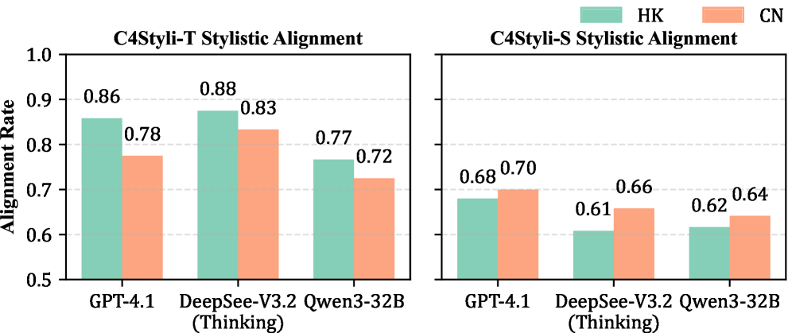
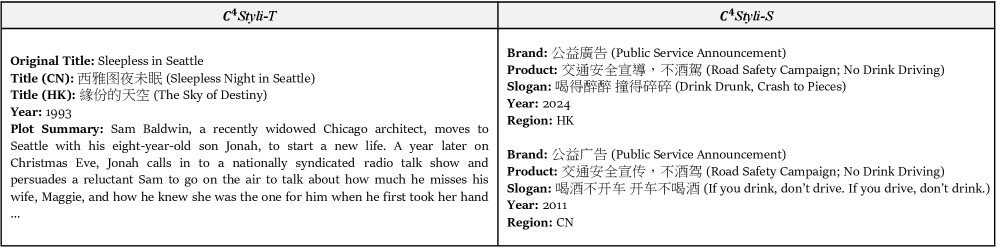

This paper reveals that LLMs exhibit shallow cultural awareness, relying on lexical shortcuts rather than structural stylistic understanding, especially for Hong Kong aesthetic stylistics.
本文通过构建C4STYLI基准（包含1530个电影片名和2837个广告标语），系统评估了大语言模型在识别和生成香港与内地中文美学风格上的能力。研究发现，模型在风格识别上依赖表层词汇线索而非深层结构理解，且识别与生成能力存在解耦现象。
Deep Note — c4styli
Key Takeaways - LLMs differ from humans in recognizing cultural aesthetic stylistics, with performance varying across text domains. - Stylistic recognition and generation are decoupled in LLMs: good recognition does not guarantee good generation. - LLMs rely on surface-level lexical cues rather than integrated stylistic structure for Hong Kong stylistics. - The C4STYLI benchmark minimizes linguistic interference by using script-normalized Chinese movie titles and slogans.
0) Metadata
- Title: Probing Cultural Awareness in LLMs: A Case Study of Cross-Culture Aesthetic Stylistics
- Alias: c4styli
- Authors: Jiashuo Wang, Fenggang Yu, Jian Wang, Chak Tou Leong, Xiaoyu Shen, Chunpu Xu, Jiawen Duan, Wenjie Li, Johan F. Hoorn
- arXiv ID: 2605.27296
- Published:
- Links:
- Abs: https://arxiv.org/abs/2605.27296
- HTML: https://arxiv.org/html/2605.27296v1
- PDF: https://arxiv.org/pdf/2605.27296
- Tags: cultural-awareness, aesthetic-stylistics, cantonese-nlp, llm-probing, cross-culture
- Domains: ai_safety, system_safety
- Rating: 3/5 (base 1 + quality 1 + observation 1)
1) Why-read
This paper reveals that LLMs exhibit shallow cultural awareness, relying on lexical shortcuts rather than structural stylistic understanding, especially for Hong Kong aesthetic stylistics.
2) CRGP
C — Context
LLMs are increasingly deployed across cultures, but their cultural awareness is often evaluated on explicit facts or values. Aesthetic stylistics—the strategic use of language for cultural resonance—remains underexplored. Prior work on Cantonese NLP is limited, with few benchmarks and models.
R — Related work
- Cultural awareness in LLMs is studied via factual knowledge, linguistic proficiency, social values, and aesthetic stylistics (hierarchical pyramid).
- Cantonese NLP is underrepresented; existing resources include PyCantonese and a few LLMs from SenseTime.
- Benchmarks like Yue-GSM8K, Yue-MMLU, Yue-ARC evaluate reasoning in Cantonese but not stylistic awareness.
G — Gap
Existing cultural benchmarks focus on explicit cultural artifacts or values, ignoring the implicit, high-level dimension of aesthetic stylistics. No prior work systematically evaluates LLMs' ability to recognize and generate culturally resonant stylistic choices in Chinese (CN vs. HK).
P — Proposal
The authors curate C4STYLI, a benchmark of 1,530 movie titles and 2,837 advertising slogans from Hong Kong and Chinese Mainland, with script normalization to isolate stylistic differences. They evaluate LLMs on behavioral recognition, productive competence, and internal representation via logistic regression probes.
---
4) Experiments
Main results
LLMs show clear human-model gaps in stylistic recognition; performance varies across domains (titles vs. slogans). Recognition and generation are not aligned—models strong at recognition may be weak at generation. Structural ablation reveals HK style recognition relies on surface lexical anchors, not integrated structure.
Ablation
Logistic regression probes on LLM representations show that removing surface-level features (e.g., high-frequency HK-specific words) significantly degrades HK style classification, while CN style remains robust, indicating shallow encoding of HK stylistics.
Limitations
['The benchmark is limited to Chinese (CN vs. HK) and may not generalize to other cultural pairs.', 'The study focuses on short, highly stylized texts; findings may not extend to longer or less stylized content.', 'Probing methods may not capture all forms of internal representation; causal interventions are not performed.']
5) Why it matters
- Highlights the need for deeper cultural sensitivity in LLMs beyond surface-level pattern matching.
- Provides a methodology (structural ablation + probing) to diagnose shallow cultural encoding.
- Relevant for deploying LLMs in culturally diverse markets like Hong Kong where stylistic nuance matters.
6) Next steps
- [ ] Extend C4STYLI to other language pairs (e.g., English vs. French, Japanese vs. Korean).
- [ ] Develop training interventions (e.g., contrastive learning on stylistic pairs) to improve structural encoding.
- [ ] Evaluate whether larger or culturally fine-tuned models exhibit deeper stylistic understanding.
7) Scoring
3/5 = base 1 + quality 1 + observation 1
探究大语言模型的文化意识：跨文化美学风格案例研究
主要结论 - 大语言模型在识别文化美学风格上与人类存在显著差距，且表现因文本领域而异。 - 风格识别与生成在大语言模型中是解耦的：良好的识别能力并不保证良好的生成能力。 - 大语言模型在处理香港风格时依赖表层词汇线索，而非整合的风格结构。 - C4STYLI基准通过脚本归一化的中文电影片名和标语，最小化了语言干扰。
1) 阅读理由
本文揭示了大语言模型在文化意识上的浅层性——依赖词汇捷径而非结构风格理解，尤其在香港美学风格方面。
2) CRGP（背景 / 相关工作 / 差距 / 方案）
背景：大语言模型在跨文化场景中部署日益增多，但其文化意识评估多集中于显性事实或价值观，美学风格（语言策略性运用以引发文化共鸣）仍未被充分探索。粤语NLP相关研究有限，缺乏基准和模型。
相关工作：大语言模型的文化意识研究涵盖事实知识、语言能力、社会价值观和美学风格（层级金字塔）；粤语NLP资源不足，现有工具如PyCantonese及商汤科技的部分模型；基准如Yue-GSM8K、Yue-MMLU、Yue-ARC评估推理能力但未涉及风格意识。
差距：现有文化基准聚焦显性文化产物或价值观，忽略了美学风格这一隐性高层次维度。尚无工作系统评估大语言模型在中文（内地 vs. 香港）中识别和生成文化共鸣风格的能力。
提案：作者构建了C4STYLI基准，包含1530个电影片名和2837个广告标语（来自香港和内地），通过脚本归一化隔离风格差异。他们通过行为识别、生成能力以及逻辑回归探针分析内部表征来评估大语言模型。
3) 实验
主要实验显示，大语言模型在风格识别上与人类存在明显差距，且表现因领域（片名 vs. 标语）而异。识别与生成能力不一致——识别强的模型可能生成弱。结构消融实验表明，香港风格识别依赖表层词汇锚点，而非整合结构。
消融实验
逻辑回归探针分析大语言模型表征发现，移除表层特征（如高频香港特有词汇）显著降低香港风格分类性能，而内地风格分类保持稳健，表明模型对香港风格编码较浅。
局限性
基准仅限于中文（内地 vs. 香港），可能不适用于其他文化对；研究聚焦于短小、高度风格化的文本，结论可能不适用于更长或风格化较弱的文本；探针方法可能无法捕捉所有内部表征形式，且未进行因果干预。
4) 重要性
- 凸显了大语言模型需要超越表层模式匹配，实现更深层的文化敏感性。
- 提供了诊断浅层文化编码的方法论（结构消融+探针分析）。
- 对在香港等文化多样性市场中部署大语言模型具有实际意义，因为风格细微差别至关重要。
5) 下一步
- [ ] 将C4STYLI扩展到其他语言对（如英语 vs. 法语、日语 vs. 韩语）。
- [ ] 开发训练干预措施（如风格对对比学习）以改善结构编码。
- [ ] 评估更大规模或文化微调模型是否展现出更深层的风格理解。



